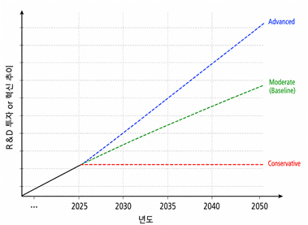

탄소중립 기술DB 기반 온실가스 감축량 평가 과제
(반도체 및 디스플레이 산업)
안녕하십니까?
먼저 귀중한 시간을 할애하여 설문에 응해주심에 감사드립니다.
본 조사는 기후에너지환경부 산하 한국환경산업기술원의 글로벌 탄소규제 대응 통합 관리 기술개발사업의 지원을 받아 수행되는 탄소중립 기술DB 기반 온실가스 감축량 평가 연구의 일환입니다.
본 설문은 반도체 및 디스플레이 산업 분야에 종사하시는 전문가 여러분의 고견을 수렴하여, 반도체 및 디스플레이 산업 내 주요 혁신감축기술의 미래 전망 도출을 목적으로 합니다.
귀하의 소중한 응답은 특정 개인이나 기업의 정보 취득이 아닌, 공익적 목적의 국가 기술 로드맵 수립 및 기술 DB 구축을 위한 기초 자료로만 활용될 것임을 약속드립니다.
ㆍ 응답 기간 : 2026년 6월 16일(화) ~ 2026년 6월 26일(금), 약 2주간
★중요 참고 사항★
본 조사는 총 2단계 델파이(Delphi) 조사로 구성됩니다.
- 예비 설문 조사(진행완료): 델파이 조사 대상 주요 혁신감축기술 후보군 선별
- 1차 델파이 조사(현재): 선별된 핵심 감축 기술군에 대한 구체적 정량 지표 전망
- 2차 델파이 조사: 1차 델파이 조사 결과 환류 및 전문가 간 의견 수렴을 통한 최종 수치 도출
※ 2차 델파이 조사까지 최종 참여해주시는 전문가 분들께는 응답 답례로 소정의 자문료를 지급해 드릴 예정입니다.
바쁘신 와중에도 반도체 및 디스플레이 산업의 지속가능한 미래를 위해 귀한 시간 내주셔서 감사드립니다.
2026년 6월
담당자:
한국에너지기술연구원 문승현 책임연구원 (shmoon@kier.re.kr)
한국에너지기술연구원 서정윤 선임연구원 (jyseo@kier.re.kr)
경희대학교 최현홍 교수 (hongchoi@khu.ac.kr)
이준용 학생연구원 (gunnercoyg@khu.ac.kr)
개인정보 수집 및 이용 동의서
먼저, 아래 응답자 개인정보 동의 질문에 응답해 주십시오.
(추후 자문비 제공 시 개인정보제공동의서 처리가 필요합니다. 본 정보는 자문비 지급 용도 외에는 절대 외부 유출되지 않음을 강조 드립니다.)
[개인정보 수집·이용 동의] 응답 확인 등 검증에 필요한 개인정보 수집 동의
- ① 개인정보 수집·이용 목적 : 응답자 답례(현금) 제공
- ② 수집 개인정보 항목 : 이름, 휴대폰 번호, 주민등록번호(세무 당국 신고용) 및 계좌 정보
- ③ 개인정보 보유기간 : 응답자 답례 제공 후, 1개월 이내
💡 귀하의 구체적인 개인정보(주민등록번호, 계좌정보)는 질문 맨 뒤에서 안전하게 질문합니다. 답례 제공을 위한 필수 확인 질문으로 반드시 응답 부탁드립니다.
(※ 귀하의 개인정보는 비밀이 철저히 보호됨을 다시 한 번 말씀드립니다.)
조사의 구성 및 응답 시 유의사항
본 조사의 질문지 구성에 대해 말씀드리겠습니다.
다음 페이지부터는 본 과제에서 반도체 및 디스플레이 산업의 전문가들이 검토한 기술 중 탄소중립을 위해 전망 예측이 특히 필요하다고 판단한 주요 혁신감축기술을 대상으로 질문을 구성하였습니다. 올해에는 8개의 기술을 대상으로 하며 올해에 고려되지 않은 기술은 차년도에 수행될 예정입니다. 구체적으로 본 조사에서는 각 기술의 비용 및 성능 전망에 대한 전문가 의견 수렴을 목적으로 합니다.
- 조사 대상: 반도체 및 디스플레이 산업 탄소중립 혁신감축기술 8개
- 조사 내용: 각 기술이 반도체 및 디스플레이 공정에 도입될 경우 예상되는 ① 기술 도입시점 및 최대 상용화 시점, ② 투자 비용(CAPEX), ③ 변동 유지보수 비용(OPEX), ④ 에너지 소비 감소 수준
- 활용 목적: 본 조사를 통해 도출된 전문가 의견을 종합하여, 감축 효과와 기술변화 전망을 분석하고, 이를 후속 조사에 활용
(A) 부분에서는 반도체 및 디스플레이 산업의 탄소중립 현황과 본 과제의 혁신감축기술 목록에 대한 설명을 제공합니다. 또한, 혁신감축기술의 도입에 따른 비용/성능 전망 시나리오를 설명합니다.
(B) 부분에서는 제시되는 반도체 및 디스플레이 산업에서 탄소중립 달성을 위한 혁신감축기술 1) 상용화 시기, 기술 발전으로 인한 2) 비용 절감 효과, 기술의 정점 시기에 달성할 수 있는 3) 에너지 소비량 감소 수준, 4) 시나리오별 연구개발비 투자에 따른 전망에 대한 질문을 통해 혁신감축기술의 비용/성능을 전망하고자 합니다.
☆ 유의사항 ☆
① 본 조사는 정답을 요구하는 조사가 아닙니다. 현업에서 축적하신 경험과 전문적 판단에 근거하여 가능한 범위에서 응답해 주시면 됩니다.
② 특정 기업, 사업장, 설비의 개별 성과를 평가하기 위한 조사가 아닙니다. 해당 기술이 반도체 및 디스플레이 산업 전반에 도입될 경우의 평균적인 효과를 기준으로 판단해 주십시오.
③ 응답 내용은 개별 기업이나 응답자를 식별하기 위한 목적으로 사용되지 않습니다. 전문가 그룹의 전반적인 전망과 기술 변화 방향을 파악하기 위한 기초 자료로만 활용됩니다.
시작에 앞서서
본 설문은 전문가님의 원활하고 정교한 응답을 돕기 위해 아래와 같이 구성되어 있으며, 전체 설문을 완료하시는 데에는 총 20~30분 내외의 시간이 소요될 것으로 예상됩니다.
ㆍ [A] 부분 (설명자료): 총 5페이지 (반도체 및 디스플레이 산업의 탄소중립 현황 및 혁신감축기술 목록에 대한 설명, 시나리오 소개)
ㆍ [B] 부분 (본설문 응답): 총 8페이지 (각 혁신감축기술 별 전문가 응답자의 의견 응답 시트)
ㆍ [C] 부분 (개인 인적 추가 사항 응답): 총 1페이지 (전문 분야 및 산업 내 역할, 답례를 위한 개인정보)
전문가님께서 제시해 주시는 한 줄의 의견과 정량적 수치는 대한민국 반도체 및 디스플레이 산업의 환경·에너지 정책과 산업 흐름을 결정짓는 핵심적인 기초 자산이 됩니다.
고도의 전문성과 통찰이 요구되는 조사인 만큼, 번거로우시더라도 일과 중 다소 시간적 여유가 있으실 때 서두르지 마시고 충분한 시간을 가지고 편안한 마음으로 응답에 임해 주시기를 정중히 부탁드립니다.
아래의 인적사항을 입력하신 후 [다음] 버튼을 누르시면, 본 조사의 바탕이 되는 [A] 부분(설명자료)에 대한 안내가 시작됩니다.
[응답자 인적사항 입력]
[A] 설명자료: 1 / 5 페이지
[A] 설명자료
반도체 및 디스플레이 주요 국내 기업 탄소중립 활동 현황
○ 국내 주요 반도체 및 디스플레이 기업은 산업 성장에 따른 탄소 배출 증가에 대응하고 탄소 감축을 추진하기 위해 세계 반도체 및 디스플레이 산업협회의 탄소 저감 목표 및 RE100 등에 참여하는 등 자발적인 노력을 이어 오고 있습니다.
- 삼성전자 DS부문은 2024년 1개 생산 라인에 4대의 대용량 통합 처리시설(RCS)을 추가 설치하여 총 52대를 운영하고 있습니다. 또한 공정개선을 통해 NF3 사용량을 25% 절감했으며, 2025년에는 G3 대체가스를 개발하여 현장에 적용하고 있습니다.
- SK 하이닉스는 2023년 세정 공정에서 3만여 tCO2eq의 온실가스 저감효과를 달성하였으며 2024년에는 플라즈마 스크러버를 개선하여 식각 공정 내 처리 효율을 기존 96.9%에서 99%까지 향상시켰습니다.
- 삼성 디스플레이는 Heat Wet 방식의 설비에 촉매 기술을 적용하여 처리 효율을 개선하였으며, 2024년에는 총 78개 설비 전반의 친환경성을 강화했습니다.
- LG 디스플레이는 2018년부터 감축 설비를 사업장에 설치해 왔으며, 2030년까지 증착공정 가스의 80%를 감축할 기술개발 계획을 발표했습니다. 또한 식각, 증착, 세정용 저 GWP 공정가스를 개발하고 양산 공정에 적용해 평가할 계획입니다.
| 기업명 |
가입시기 |
RE100 달성 목표연도 |
2024년도 국내 사업장
RE100 전환율 |
| 삼성전자 | 2022년 | 2050년 | 24.8% |
| SK 하이닉스 | 2020년 | 2050년 | 29.9% |
| 삼성 디스플레이 | 2022년 | 2050년 | 25.0% |
| LG 디스플레이 | 미가입 | 2050년 RE90 목표 | 35.6% (국내+국외) |
출처: 각 기업 지속가능경영보고서(2025년)
[A] 설명자료: 2 / 5 페이지
[A] 설명자료
반도체 및 디스플레이 산업 탄소중립 목표
○ 기후위기 대응이 주요한 글로벌 의제로 부상함에 따라, 세계 주요국은 2050년까지 탄소중립 실현을 선언하였습니다.
- 2023년 정부는 ‘탄소중립 기술개발 라운드테이블’을 개최하고 ‘산업 부문 탄소 중립 R&D 추진전략’을 발표했으며 반도체 및 디스플레이 등 탄소 다배출 4대 업종 대표 사와 함께 탄소중립 기술혁신을 통해 2050년까지 온실가스 1억 2000만 톤을 감축하겠다는 목표를 제시하였습니다.
- 반도체 산업에서 배출하는 온실가스는 전력 사용 등으로 인한 간접 배출(Scope 2)이 70-80%를 차지하고 증착과 식각 등의 생산 공정에서 배출하는 공정 배출(Scope 1)이 20~30%를 차지합니다.
- 기업들은 지속적으로 전력 사용량 감축을 위한 노력을 이어오고 있으나, 공정설비가 구축된 이후에는 추가적인 에너지 효율 상승이 제한될 수 있습니다. 또한 EUV 장비 도입과 적층 확대 등 반도체 고도화에 따라 전력 사용량이 증가하고 있어, 전력 사용량 감축만으로는 탄소중립 달성에 한계가 있을 것으로 예상됩니다.(KEI, 2023)1)
- 이에 본 연구는 온실가스 감축을 위한 핵심 영역으로 공정 배출(Scope 1) 감축에 집중하고자 합니다. 구체적으로 ①대체 공정 가스 개발(저 GWP 가스 개발), ②공정 효율 향상을 통한 가스 사용량 저감(공정 개선), ③배출된 공정 가스 및 부산물의 고효율 분해설비 개발(후처리 기술)을 중심으로, 공정 가스의 최종 배출을 저감시키기 위한 기술 개발에 연구개발을 힘쓰고 있습니다.
- 반도체 및 디스플레이 산업에서는 공정 가스 사용 대비 배출량을 억제하는 공정 저감률 향상이 주요 목표로 제시되고 있습니다. 특히 기초 소재로 실리콘을 지속적으로 활용하는 한 F-gas 사용이 불가피하므로, 2050년까지 공정 저감률을 최대한 높여 탄소중립에 근접하는 것이 중요한 과제로 제시됩니다.
| 구분 |
2018년 |
2030년 |
2040년 |
2050년 |
| 공정 저감률 (%) | 78.5 | 93 | 96 | 99.5 |
자료: 남상욱(2022)2) . p67, 표 5-4. (KEI, 2023 재인용)
1) 신동원, 임형우, 문종우, 이정은, 이하경, 이재윤, 조용원, 이고은, 남상욱, 최동원, & 임태민. (2023). 기술수요자 중심의 탄소중립 기술 시나리오 분석(II) (연구보고서 979-115980-720-6). 한국환경연구원(KEI).
2) 남상욱(2022), 「반도체·디스플레이산업의 탄소중립 추진전략과 정책 과제」, 산업연구원, p.67.
[A] 설명자료: 4 / 5 페이지
[A] 설명자료
반도체 및 디스플레이 산업 주요 혁신감축기술 (설문대상 기술)
○ 본 연구에서 올해(2차년도)에 고려하고 있는 반도체 및 디스플레이 산업 내 주요 혁신감축기술은 다음과 같이 총 8개이며, 각각 주요 혁신감축기술은 대분류 기준에 따라 공정 개선, 저 GWP 가스 개발, 후처리 기술로 구성됩니다.
- 타 주요 혁신감축기술은 차년도(3차년도)에 전망을 예측할 예정입니다.
| 순번 |
대분류 |
주요 혁신감축기술명 |
| 1 | 공정 개선 | 저온 플라즈마 산화 공정 |
| 2 | AI기반 극저온 식각 공정 |
| 3 | ALD 증착 및 저온 플라즈마 이온주입 공정 |
| 4 | Hybrid 세정 공정 |
| 5 | 저 GWP 가스 개발 | 저 GWP 가스 이용 식각 공정 |
| 6 | 저 GWP 가스 이용 증착 공정 |
| 7 | 저 GWP 가스 이용 세정 공정 |
| 8 | 후처리 기술 | 증착/세정 공정용 Heat-cat-wet |
- - 공정 개선 대분류는 가스 사용량 자체를 줄이거나, 에너지 소비가 적은 차세대 공법 및 설비를 도입하여 배출량을 감축하는 기술 분류입니다. 챔버 내부의 화학 반응 조건을 최적화 하거나 전력 소비가 큰 부대 설비의 효율을 높여 원천적인 에너지 및 자원 투입량을 줄이는 기술들이 포함되어 있습니다.
- ①저온 플라즈마 산화 공정은 고온 열 산화를 대신해 플라즈마를 도입하여 저온에서 산화시키는 기술입니다.
- ②AI 기반 극저온 식각 공정은 식각 공정을 낮은 온도에서 수행하여 에너지 소모를 줄이는 기술입니다.
- ③ALD 증착 및 저온 플라즈마 이온주입 공정은 원자층 단위로 증착하여 저온에서 이루어지도록 하는 기술입니다.
- ④Hybrid 세정 공정은 물리적ㆍ화학적 세정 방식을 혼합하여 세정 가스와 용수 사용량을 동시에 절감하는 기술입니다.
- - 저 GWP 가스 개발 대분류는 지구온난화지수(GWP)가 높은 기존 공정 가스를 환경 영향이 적은 가스로 대체하거나 회수하여 재사용하는 기술 분류입니다. 공정 방식은 유지하되, 투입되는 가스를 친환경적으로 전환하여 배출 총량을 억제하는 기술들이 포함되어 있습니다. 각 가스의 화학식(레시피)은 기밀사항인 경우가 많아 본 설문에서는 공정 단계별 적용되는 수준에서 기술을 유형화 하였습니다.
- ⑤저 GWP 이용 식각 공정은 기존 가스(SF6, CH4 등)를 대신하여 낮은 GWP 가스로 식각하는 기술입니다.
- ⑥저 GWP 이용 증착 공정은 기존 가스(N2O 등)를 대신하여 낮은 GWP 가스로 증착하는 기술입니다.
- ⑦저 GWP 이용 세정 공정은 기존 가스(NF3 등)를 대신하여 낮은 GWP 가스로 세정하는 기술입니다.
- - 후처리 기술 대분류는 공정에서 배출된 가스를 물리적ㆍ화학적 방식으로 분해하거나 무해화하는 기술 분류입니다. 챔버 외부로 배출된 폐가스를 최종 단계에서 정화하거나, 처리 과정에서의 에너지 회수를 극대화 하는 성격의 기술들이 포함되어 있습니다.
- ⑧증착/세정 공정용 Heat-cat-wet은 증착/세정 공정에서 배출되는 가스를 히터와 촉매를 사용해 낮은 온도에서 처리하는 기술입니다.
[A] 설명자료: 5 / 5 페이지
[A] 설명자료 (5p)
반도체 및 디스플레이 산업 감축기술 전망 시나리오
○ 반도체 및 디스플레이 산업은 빠르게 증가하는 생산량으로 인해 탄소 배출량이 증가하고 있어 ‘2050 탄소중립’ 달성을 위해 추가적인 기술개발과 선제적 감소 노력이 필요한 상황이며 2023년 정부는 8년간 2,571억 원 규모의 연구개발비 투자 계획을 발표(2023년 144억 원 규모 예산 집행) 했습니다.
○ 삼성전자, SK 하이닉스, 삼성디스플레이, LG디스플레이 등 주요 국내 기업은 온실가스 감축을 위해 전사적 차원의 연구개발을 수행하고 실제 생산라인에서 적용하고 있습니다.
○ 본 연구에서는 기술 진보를 낙관적(Advanced), 중립적(Moderate), 비관적(Conservative) 시나리오로 구분하여 혁신감축기술의 비용 및 성능이 어느 정도 범위에서 조정될 수 있는지에 대한 전문가 의견을 조사하고자 합니다.
< 시나리오 구분 및 설명 >
| 구분 |
시나리오 개념 |
수준 설명 |
낙관적
(Adv)
전망 |
- 반도체 및 디스플레이 산업의 연구개발 투자가 대폭 확대되어, 혁신감축기술이 원활하고 성공적으로 시장에 도입되는 경우
- R&D 성과가 빠르게 나타나고, 기술 성능 개선 및 비용 저감이 기대보다 크게 발생하는 시나리오 |
R&D 투자,
혁신 추이
계획안 개선 |
중립적
(Mod)
전망 |
- 반도체 및 디스플레이 산업의 연구개발 투자와 정책 환경이 현재 수준에서 유지되는 경우
- 현 상황이 지속되는 상황 속 발생 가능성이 높은 시나리오 |
R&D 투자,
혁신 추이
계획안 유지 |
비관적
(Con)
전망 |
- 반도체 및 디스플레이 산업의 2025년 연구개발비가 지속되는 경우로 과거 투자 성과와 제한적 학습 효과만 반영되는 경우
- 공공 및 민간 투자의 위축으로 인해 근본적인 기술 구조의 변화가 없는 시나리오 |
R&D 투자,
혁신 추이
계획안 위축 |
* 민간 투자액은 민간별 전체 연구개발비의 증가에 따라 탄소중립 기술 연구개발비도 증가하는 것으로 가정 (주요 기업의 매출액 대비 R&D 투자 비중은 10~15% 수준)
[R&D 투자 및 혁신 추이 시나리오 그래프]

설명자료를 모두 숙지하셨습니다. [다음] 버튼을 누르시면 8개 핵심 감축기술에 대한 본 설문([B] 부분) 이 시작됩니다.
[맺음말]
바쁘신 와중에도 귀한 시간을 내어 본 설문에 참여해 주셔서 진심으로 감사드립니다.
전문가 여러분께서 응답해 주신 소중한 고견은 NDC 달성을 위한 국내 반도체 및 디스플레이 산업의 탄소중립 기술 로드맵 수립의 핵심 자료로 매우 의미 있게 활용될 예정입니다.
💡 안내 사항:
본 조사는 총 2단계 델파이(Delphi) 조사로 진행되며, 응답해주신 1차 결과가 정리되는 대로 2차 설문 안내를 드릴 예정입니다. 최종 조사(2차 델파이 조사)까지 모두 참여해 주신 전문가분들께는 감사의 마음을 담아 소정의 자문료를 지급해 드릴 예정입니다.
향후 조사에도 지속적인 관심과 참여를 부탁드립니다.
다시 한번 대한민국 반도체·디스플레이 산업의 미래를 위해 지혜를 나누어 주셔서 감사합니다.
오늘도 행복하고 평안한 하루 보내시길 바랍니다.
- 경희대학교 연구진 올림